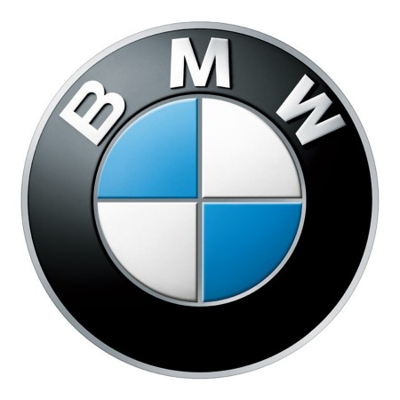

홈 > 브랜드 매거진 > BMW
BMW
BMW는 이동수단을 만드는 회사를 넘어, 주행 감각과 조형 언어를 함께 설계하는 디자인 브랜드다. BMW의 강점은 성능 수치만으로 설명되지 않는다. 운전자가 차를 보고, 만지고, 움직이는 순간에 느끼는 긴장감과 안정감이 하나의 브랜드 경험으로 조직된다.
산업 분야 모빌리티 · 공개 등급 편집 검수 · 브랜드 평가 4.7 ★

한눈에 보는 브랜드
BMW는 이동수단을 만드는 회사를 넘어, 주행 감각과 조형 언어를 함께 설계하는 디자인 브랜드다. BMW의 강점은 성능 수치만으로 설명되지 않는다.
운전자가 차를 보고, 만지고, 움직이는 순간에 느끼는 긴장감과 안정감이 하나의 브랜드 경험으로 조직된다.
브랜드 관점
BMW는 이동수단을 만드는 회사를 넘어, 주행 감각과 조형 언어를 함께 설계하는 디자인 브랜드다. BMW의 강점은 성능 수치만으로 설명되지 않는다.
운전자가 차를 보고, 만지고, 움직이는 순간에 느끼는 긴장감과 안정감이 하나의 브랜드 경험으로 조직된다. BMW의 브랜드 문화는 속도보다 통제된 역동성에 가깝다.
강한 주행 성능을 앞세우면서도 브랜드가 반복해서 전달하는 감각은 무모함이 아니라 정교하게 제어되는 힘이다.
시작과 성장
BMW는 프란츠 요세프 포프가 1916년에 설립한 독일의 자동차 브랜드로, 세단을 포함해 컨버터블, SUV, 스포츠카 및 모터사이클 등을 제조 · 판매함.
브랜드 아이덴티티
BMW의 시각 정체성은 둥근 원 안에 청색과 백색의 사분원을 교차 배치하고 검은 테두리에 흰색 BMW 레터링을 둘러 1917년 처음 등록되었다. 이 청백 배색은 회사가 자리한 바이에른 주를 상징하는 청백 마름모 주기에서 유래했다는 설명이 가장 널리 받아들여진다.
흔히 회전하는 항공기 프로펠러를 형상화했다고 여겨지지만, 이는 1929년 한 광고에서 엠블럼을 프로펠러 위에 겹쳐 묘사한 데서 비롯된 후대의 통념이며 창립기 제정 의도와는 무관하다는 점이 여러 자료에서 교차 확인된다. 2020년에는 엠블럼을 입체 음영과 불투명 검정 링을 걷어낸 투명 배경의 평면 형태로 다시 다듬어, 디지털 화면과 다양한 배경에서 유연하게 쓰이도록 했다.
제품과 서비스
승용자동차, 모터사이클, 전기자동차
현재 상태
타임라인
BI/CI 변천사
함께 읽을 브랜드
 모빌리티 · 편집 검수볼보
모빌리티 · 편집 검수볼보볼보(Volvo)는 1927년 스웨덴 예테보리에서 출발한 자동차 브랜드로, 승용차(볼보 자동차)와 상용차(볼보 그룹)로 분리돼 있다.
 모빌리티 · 편집 검수AGIP
모빌리티 · 편집 검수AGIP아지프(Agip)는 1926년 이탈리아에서 국영으로 출범한 석유 브랜드로, 정식 명칭은 '아첸다 제네랄레 이탈리아나 페트롤리(Azienda Generale Itali...
 모빌리티 · 자료 기반현대자동차
모빌리티 · 자료 기반현대자동차현대자동차(Hyundai Motor)는 한국을 대표하는 자동차 기업으로, 인터브랜드 2025 베스트 코리아 브랜드 2위(브랜드 가치 약 27.9조 원)에 올랐다.
 모빌리티 · 자료 기반제네시스
모빌리티 · 자료 기반제네시스제네시스(Genesis)는 현대자동차그룹이 2015년 출범시킨 럭셔리 자동차 브랜드다.
 모빌리티 · 매거진 완성할리데이비슨
모빌리티 · 매거진 완성할리데이비슨할리데이비슨은 모터사이클보다 자유와 소속감의 의식을 더 강하게 판매한다. 제품은 이동수단이지만 브랜드의 핵심은 엔진음, 라이딩 문화, 커뮤니티, 반항적 이미지가 결합...
 모빌리티 · 편집 검수아우디
모빌리티 · 편집 검수아우디아우디(Audi)는 독일 잉골슈타트에 본사를 둔 폭스바겐 그룹 산하 프리미엄 자동차 제조사이다.
 모빌리티 · 편집 검수페라리
모빌리티 · 편집 검수페라리페라리(Ferrari)는 이탈리아 마라넬로에 본사를 둔 럭셔리 스포츠카 제조사이다.
 모빌리티 · 자료 기반기아
모빌리티 · 자료 기반기아기아(Kia)는 한국의 자동차 기업으로, 인터브랜드 2025 베스트 코리아 브랜드 3위(브랜드 가치 약 9.8조 원)에 올랐다.